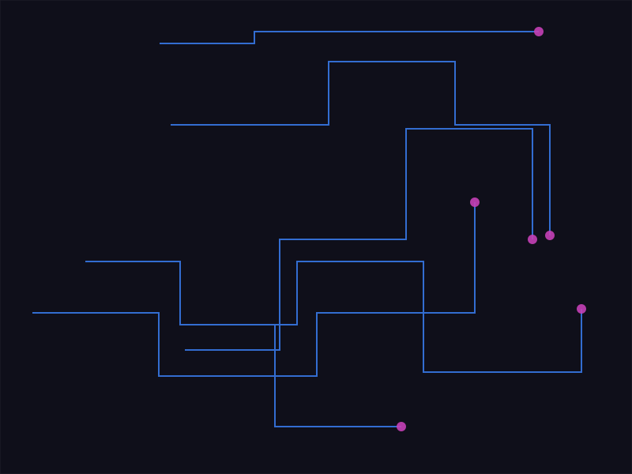
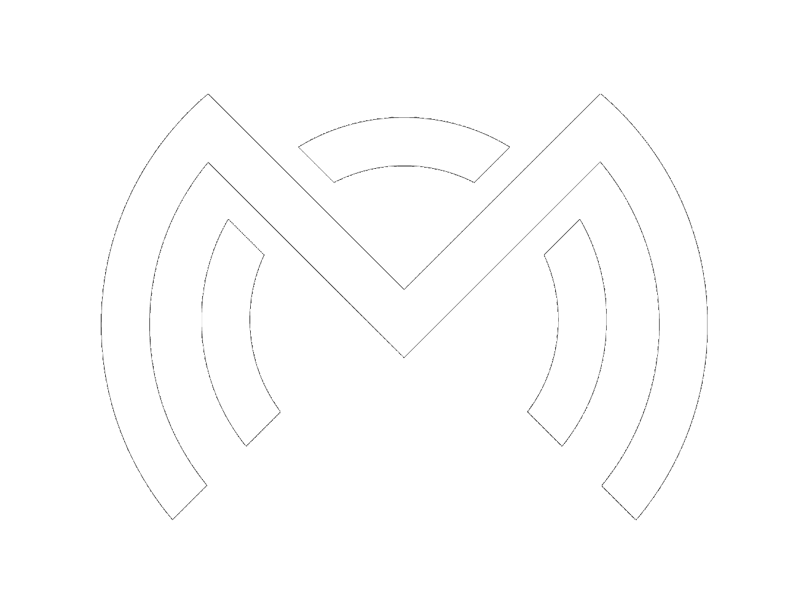
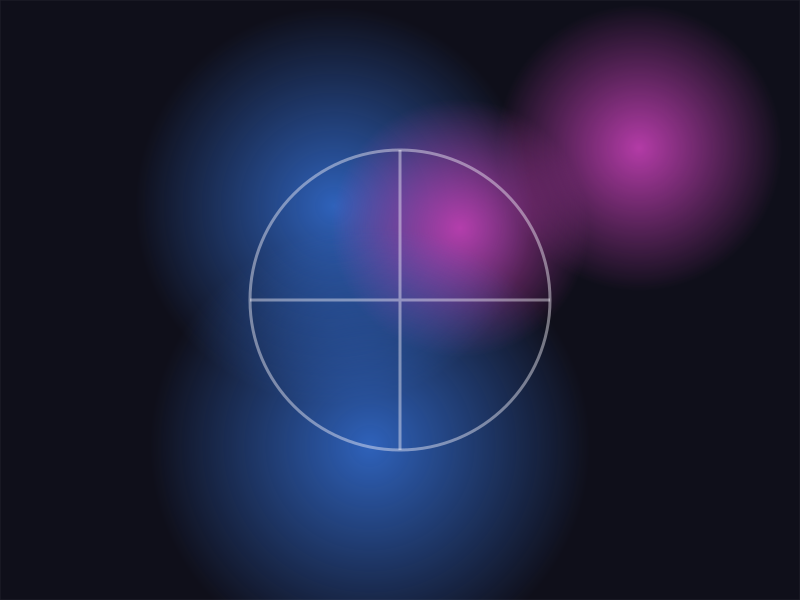
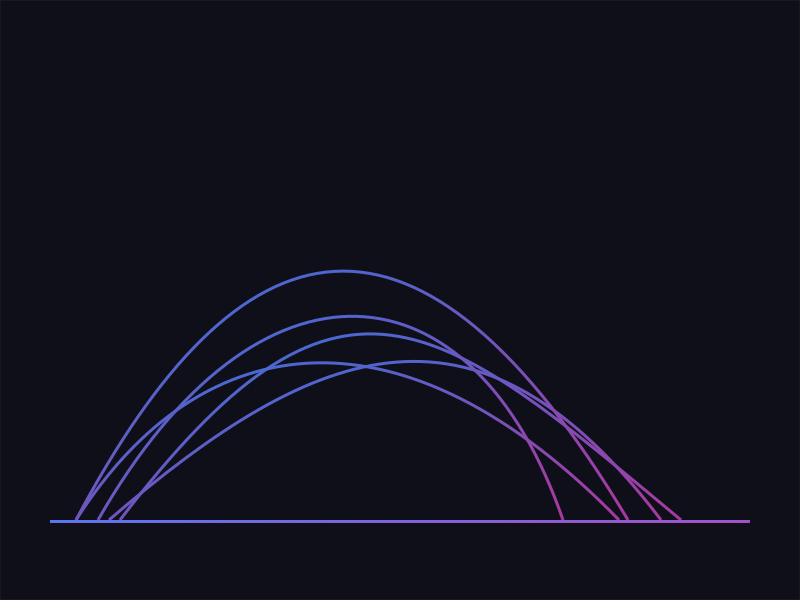
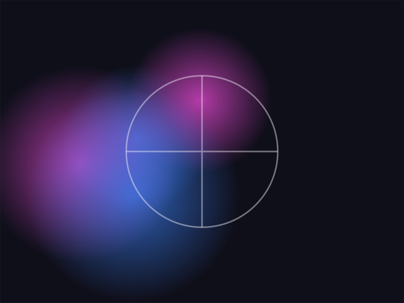
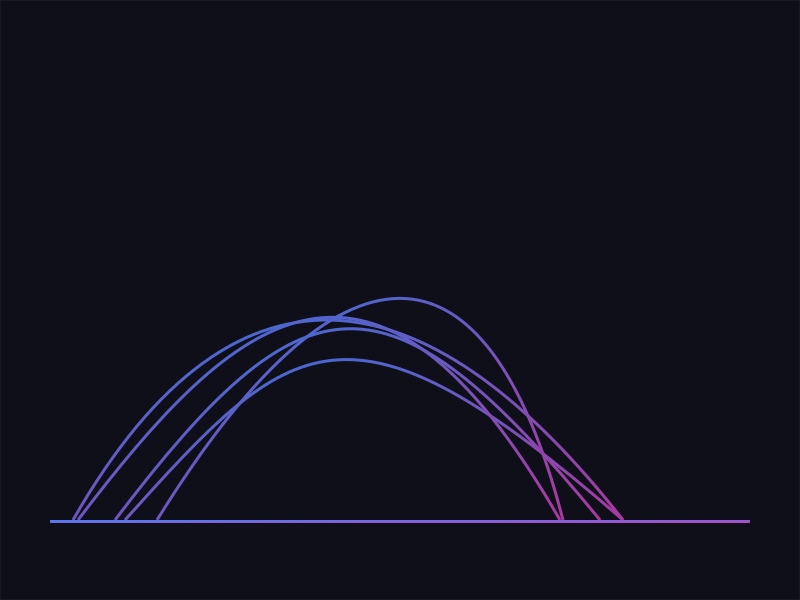
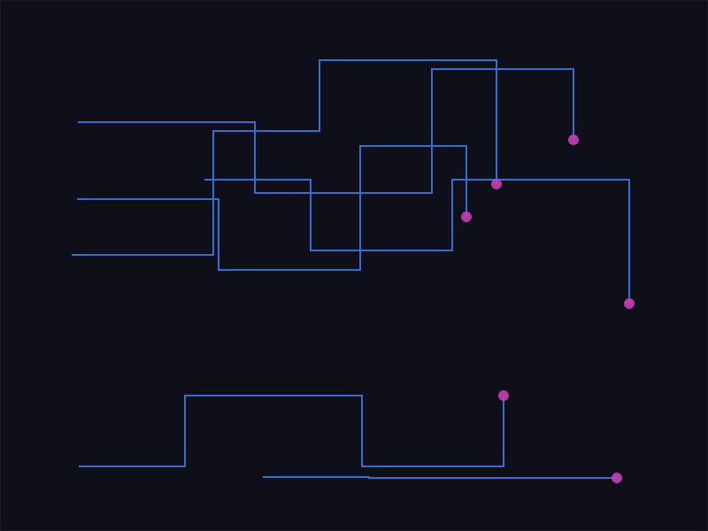
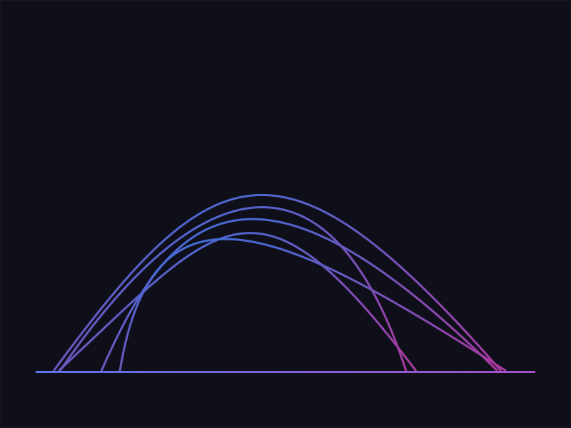
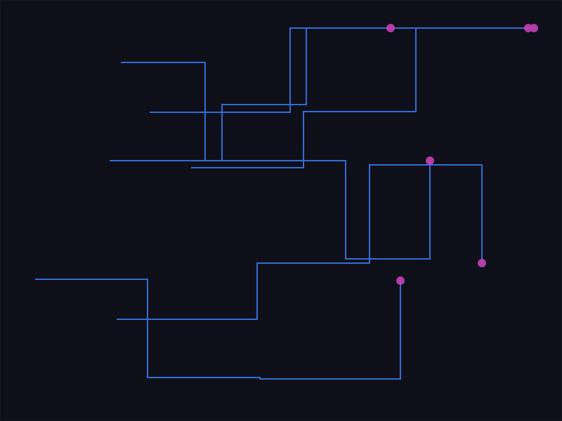

ITRAD — Applicazioni web industriali
Sviluppo e manutenzione di applicazioni web in ambiente aerospace & defense, con focus su qualità del codice e scalabilità.
Marianna Cecchelli — Firenze

Sviluppo, brand identity, WordPress e video. Il filtro parte da tutto: scegli tu da dove entrare.

Sviluppo e manutenzione di applicazioni web in ambiente aerospace & defense, con focus su qualità del codice e scalabilità.

Rebranding completo: logo, sistema tipografico, palette colori e brand guidelines.

Rebranding, sito web e podcast per un brand locale.

Presenza digitale e comunicazione per un cliente locale: sito, contenuti e coerenza visiva.

Progetti di promozione del territorio: strategia digitale, contenuti e identità visiva.

Progetto espositivo presentato a IED Firenze e pubblicato su FrizziFrizzi.

Short List Nazionale, sezione TV.

Secondo posto al contest video.